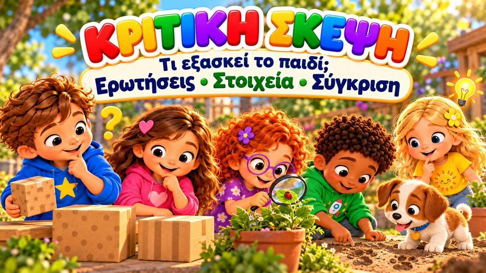
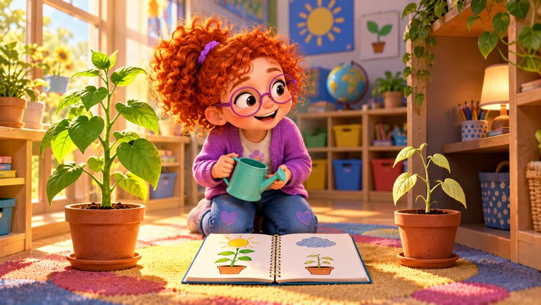
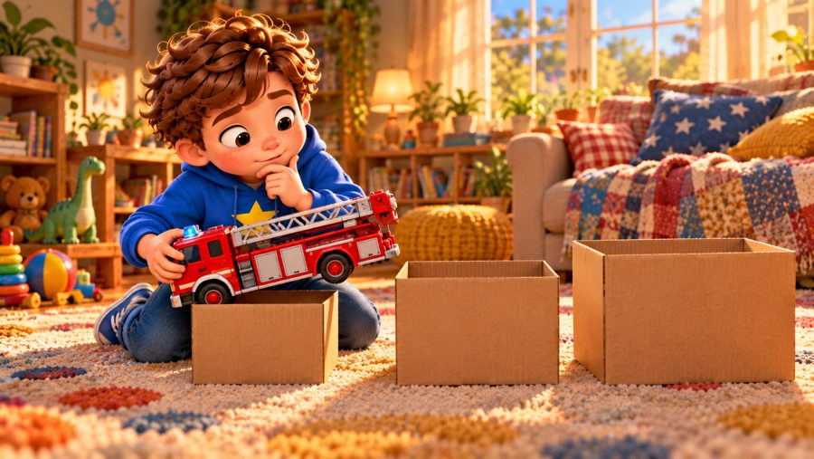
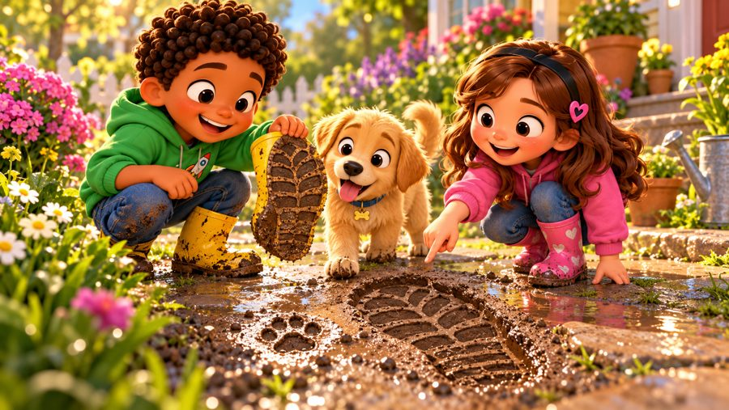
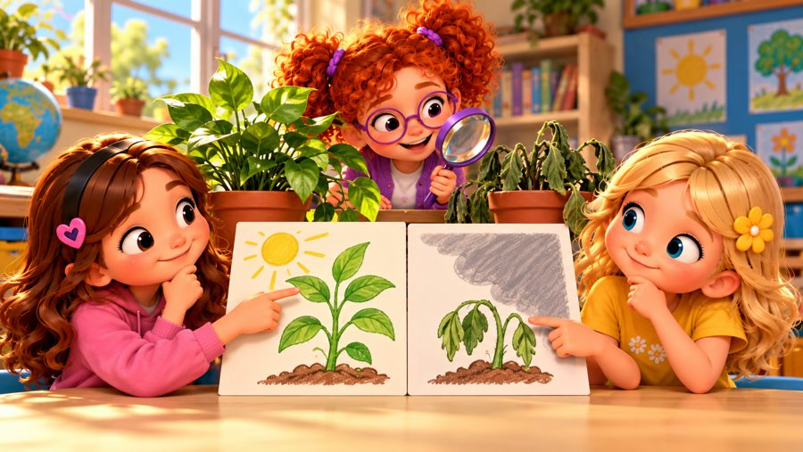
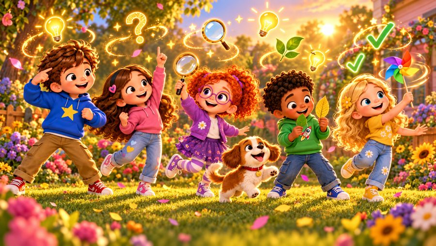

Σκέψου, Σκέψου, Σκέψου
Σκέψου, σκέψου, σκέψου! 🔍 Τραγουδήστε με τον Μαξ, τη Μία, τον Τζέι, τη Λίλι, τη Ρόζι και τον Μπάντι και μάθετε να κοιτάζετε προσεκτικά, να κάνετε ερωτήσεις, να συγκρίνετε ιδέες και να ελέγχετε τα στοιχεία πριν αποφασίσετε.
Ο Μαξ συγκρίνει τρία κουτιά για να βρει ποιο χωράει το παιχνίδι. Η Ρόζι δοκιμάζει αν τα φυτά χρειάζονται φως. Ο Τζέι εξετάζει τις πατημασιές αντί να κατηγορήσει βιαστικά τον Μπάντι. Κάθε ιστορία δείχνει ότι η κριτική σκέψη δεν σημαίνει πως ξέρουμε όλες τις απαντήσεις — σημαίνει ότι ρωτάμε, ελέγχουμε και μπορούμε να αλλάξουμε γνώμη όταν μαθαίνουμε κάτι νέο.

▶💡 Γιατί είναι σημαντικό: Κριτική σκέψη
Η κριτική σκέψη βοηθά τα παιδιά να σταματούν, να κάνουν ερωτήσεις και να ελέγχουν τα στοιχεία αντί να πιστεύουν την πρώτη ιδέα που ακούν. Τα βοηθά να κάνουν ασφαλέστερες επιλογές, να λύνουν προβλήματα και να κρατούν ζωντανή την περιέργειά τους. Όταν το παιδί βιάζεται να μαντέψει, ρωτήστε: «Τι στοιχεία έχουμε;» και «Πώς μπορούμε να το ελέγξουμε;».
👨👩👧 Τι μαθαίνει το παιδί
- Κοιτάζω προσεκτικά πριν διαλέξω
- Ρωτάω «γιατί;» και «πώς;»
- Συγκρίνω ιδέες και ψάχνω στοιχεία
- Δοκιμάζω αν μια ιδέα είναι σωστή
- Αλλάζω γνώμη όταν βρίσκω νέα στοιχεία
💬 Κουβέντα μετά το τραγούδι
- Πώς διάλεξε ο Μαξ το σωστό κουτί;
- Τι έκανε η Ρόζι αντί να μαντέψει;
- Γιατί οι πατημασιές δεν ήταν του Μπάντι;
- Πότε έμαθες κάτι που σε έκανε να αλλάξεις γνώμη;
🏅 Κουίζ & Πτυχίο
Είδατε το τραγούδι μαζί; Τώρα διαβάστε στο παιδί κάθε ερώτηση — το παιδί δείχνει τη σωστή εικόνα. Αν απαντήσει και στις 6 ερωτήσεις, κερδίζει ένα πτυχίο για εκτύπωση!
🔒 Το όνομα χρησιμοποιείται μόνο για να φτιαχτεί το πτυχίο στη συσκευή σας. Δεν αποθηκεύουμε και δεν στέλνουμε τίποτα.
Τα κατάφερες! 🎉
Και οι 6 απαντήσεις είναι σωστές! Γράψτε το όνομα του παιδιού για να φτιαχτεί το πτυχίο.
🖨️ Δωρεάν εκτυπώσιμα
Δωρεάν για χρήση στο σπίτι και στην τάξη. Εκτυπώστε σε χαρτί Α4.
🖼️ Σκηνές από το τραγούδι






🎵 Κι άλλα τραγούδια


🎤 Στίχοι – Σκέψου, Σκέψου, Σκέψου
Σκέψου, σκέψου, σκέψου!
Κοίτα προσεκτικά!
Κάνε μια ερώτηση:
«Τι συμβαίνει τελικά;»
Σκέψου, σκέψου, σκέψου!
Δες τι είναι σωστό!
Ψάξε πρώτα τα στοιχεία
πριν διαλέξεις το σωστό!
Ρώτα! Σύγκρινε! Κοίτα ξανά!
Δοκίμασε μια ιδέα και έλεγξέ την καλά!